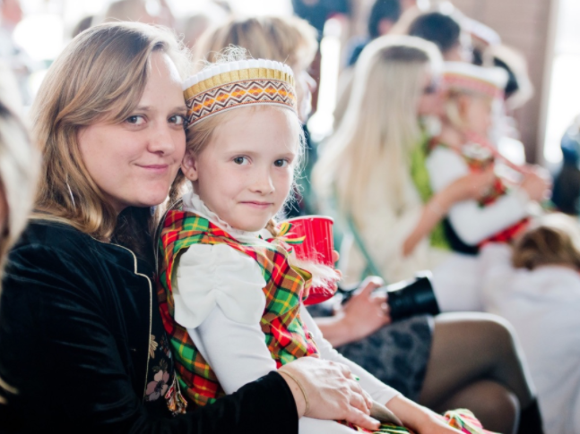
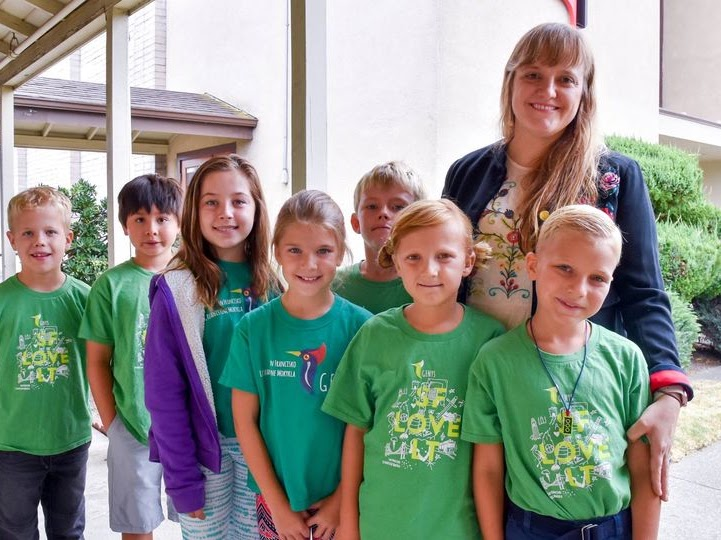
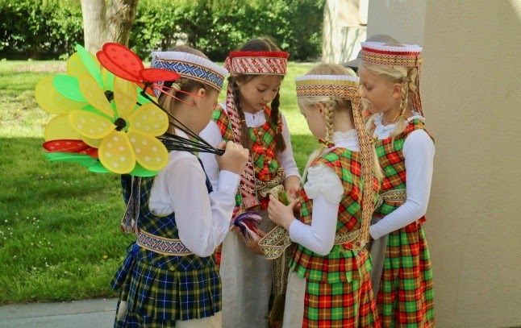

APIE MUS
Vadovės žodis
Sveiki atvykę į mūsų šeštadieninę San Francisco Lituanistinę Mokyklą „Genys“!
Pradedant naujus metus ir naujas pareigas trumpai noriu priminti mūsų mokyklos istoriją. Mes pradėjome savo veiklą 2006 metų pavasarį, kuomet po lietuvių bendruomenės tradicinės cepelinų šventės, keturios entuziastingos mamos nusprendė, kad būtų šaunu rasti mokytoją ir sukurti erdvę vaikams mokytis ir tobulinti lietuvių kalbą bei kultūrą. Taip mūsų istorija prasidėjo. Aš prie mokytojų kolektyvo prisijungiau, kai mano dukrytei suėjo ketveri metukai, ir iki šiol mokau penktos ir šeštos klasės mokinius.
Kiekvienais metais mūsų mokykla auga ir plečiasi. Mūsų mokiniai dalyvauja dainų ir šokių šventėse, spektakliuose, televizijos laidose, įvairiuose projektuose, tarptautiniuose rašinių, piešinių, atvirukų ir animacijų konkursuose. Covid-19 pandemijos metu tęsėme mokslus nuotoliniu būdu.
Mokykloje dirba nuostabus išradingų ir atsidavusių mokytojų kolektyvas, o mums padeda aktyvus tėvelių komitetas. Mokyklą remia San Francisco lietuvių bendruomenė, Švietimo ir lituanistinio ugdymo institucijos Lietuvoje ir Amerikoje. Mes visada laukiame naujų šeimų, kurios nori ugdyti lietuviškumą savo šeimoje.
Mokytojavimas San Francisco Lituanistinėje Mokykloje „Genys“ man suteikia galimybę puoselėti mano pačios šeimos ir bendruomenės kalbą, papročius ir kultūrą išeivijoje. Su nekantrumu laukiu šeštadieninių pamokų ir visada pasisemiu kūrybiškumo, apsupta neišblėstančios vaikiškos energijos.
Mano, kaip vadovės, tikslas yra suburti lietuvių kilmės šeimas ir suteikti galimybę mokytis, tobulinti lietuvių kalbos ir kultūros žinias gyvenant už Lietuvos ribų. Mokykloje susiburiame siekdami bendrų tikslų ir suteikiame galimybę šeimoms ugdyti dvikalbystės ir daugiakalbystės gebėjimus, organizuojame lietuviškus renginius, dalinamės lituanistinio ugdymo naujovėmis, šokiais ir dainomis.
Lankydami lituanistinę mokyklą mūsų mokiniai ir šeimos turi galimybę sukurti ir puoselėti ilgamečius draugystės ryšius vieni su kitais! Ypatingai dabar – mums visiems reikia vienas kito!
Atviromis rankomis ir širdimi kviečiu Jus prisijungti prie mūsų šeštadieninės veiklos San Francisko Lituanistinėje Mokykloje „Genys“!
Šiltai,
Aistė Solly
San Francisko
Lituanistinės Mokyklos „Genys“ vadovė
5–6 klasės mokytoja
Mokyklos akimirkos


